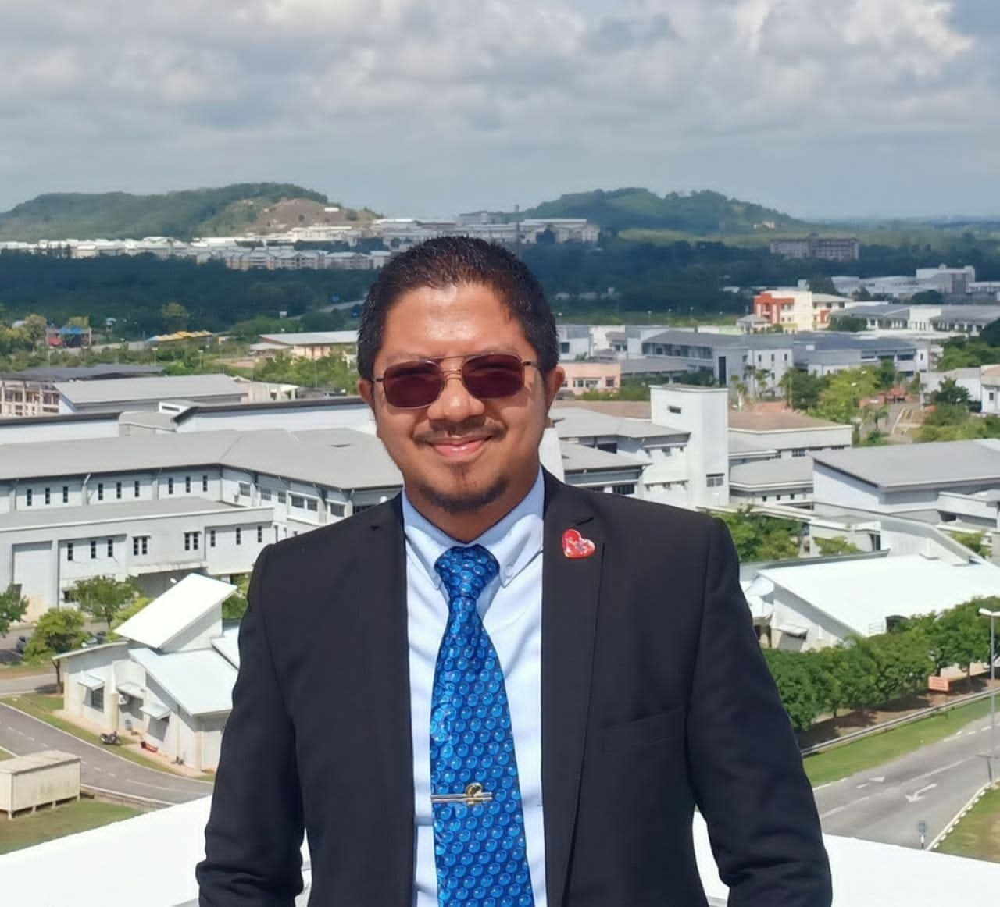
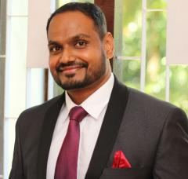
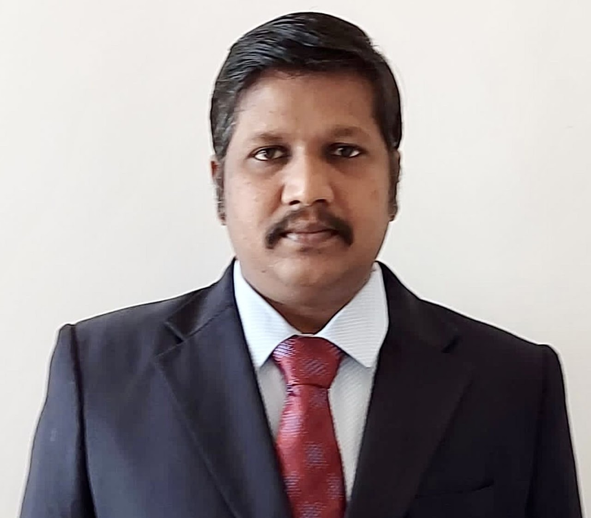

Keynote Speakers
We are honored to host a distinguished panel of keynote speakers who are leaders in academia and industry. Their insights and expertise will provide valuable perspectives on fostering innovation in intelligent systems and next-gen networks.

Dr. Muzammil Bin Jusoh
Associate Professor
Faculty of Electronic Engineering & Technology
Universiti Malaysia Perlis
Faculty of Electronic Engineering & Technology
Universiti Malaysia Perlis
Dr. Afizan Bin Azman
Associate Professor
School of Computer Science, Faculty of Innovation & Technology
Taylor's University, Malaysia
School of Computer Science, Faculty of Innovation & Technology
Taylor's University, Malaysia

Dr. Jino Ramson
Principal Engineer
GlobalFoundries
United States
GlobalFoundries
United States

Dr. Sujatha N
Department of Applied Mechanics and Biomedical Engineering
Indian Institute of Technology Madras, Chennai, India
Indian Institute of Technology Madras, Chennai, India

Dr. M. D. Selvaraj
Dean (Design, Innovation, Incubation)
Professor, Department of ECE
Indian Institute of Information Technology, Kancheepuram
Professor, Department of ECE
Indian Institute of Information Technology, Kancheepuram